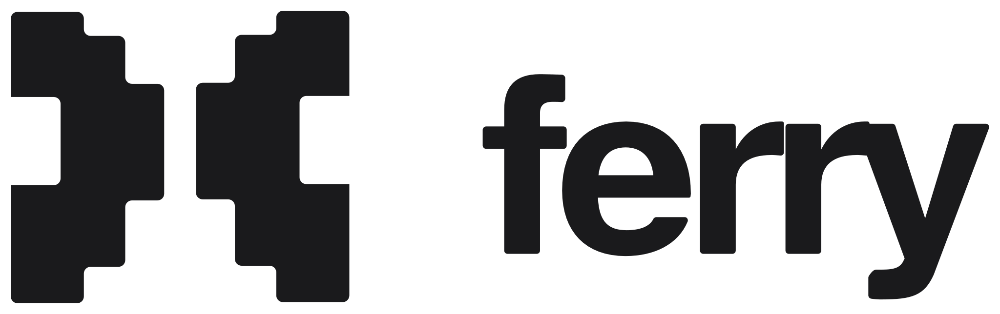
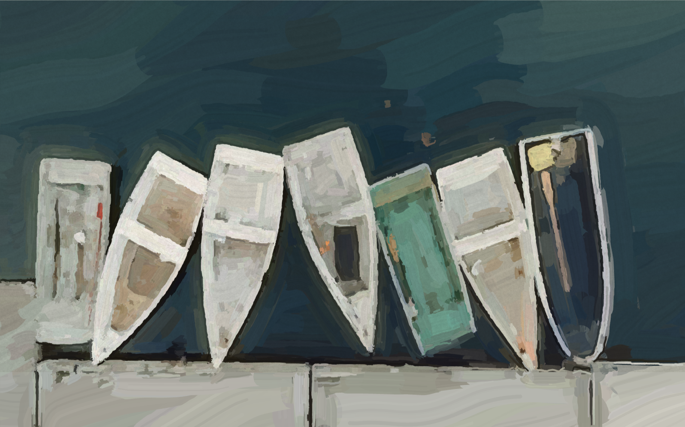
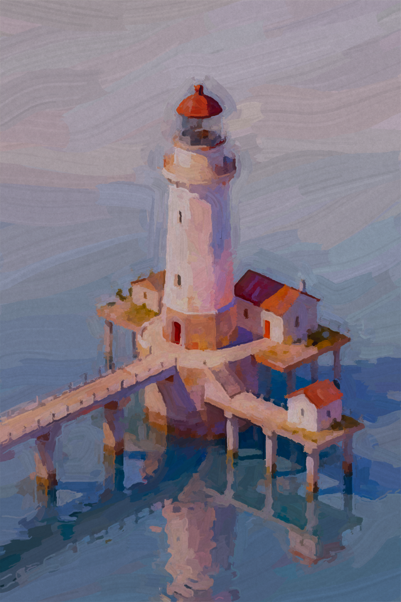

PrimitiveThe shore. One step, on the side that faces the crossing.
Two shores, one channel. The painting carries on across the gap.
24 to 160 px. The step keeps its proportion; the radius never drops below 2 px.

